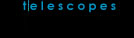

|
|  |

Since August 1996, Saskatoon Centre has made its telescopes available for rent to RASC members on a monthly basis. We have six telescopes and one set of eyepieces available for rent:
- 3.1 inch Tasco refractor
- 4 inch Astroscan compact reflector
- 6 inch rich field reflector on Meade LXD55 Equatorial GoTo Mount
- Meade 8 inch skywatcher - telescope 1
- Meade 8 inch skywatcher - telescope 2
- Meade 8 inch skywatcher - telescope 3
- Eyepieces (to be rented as a single unit):
- 2"/1.25" Hyperion 5mm 68 degrees
- 2"/1.25" Hyperion 8mm 68 degrees
- 2"/1.25" Hyperion 13mm 68 degrees
- 2" Knight OWL 30mm 80 degrees
RENTAL INFORMATION
- The renter must be a member in good standing of the RASC. Should the renter cease to be a member while in possession of a rental telescope. the telescope must be returned immediately.
- $10 per calendar month. $5 for less than half a calendar month.
- Should you feel that these rates are too outrageous, borrow the telescope anyway and pay what you deem to be fair.
- Make your payment when you return the telescope.
- Make cheques payable to "Saskatoon Centre RASC".
- If you pay cash, be sure to get a receipt for your payment from the curator.
- Email our current telescope curator (Errol Frazer-Harrison) with the following information:
- Your name and email address.
- Which telescope you wish to borrow.
- When you want to pick up the telescope.
- How long you anticipate borrowing the telescope.
- The curator will contact you and, should the telescope be available, set up a time and date for pick-up at the Observatory on the University of Saskatchewan campus.
- You may keep the telescope for a minimum of one month.
- Should some other member request the telescope while you have it on loan, you will be asked to return the telescope at the end of your month. If no one requests the telescope, your loan agreement can be extended for a second month to an absolute maximum of one year (12 months) at which time the telescope must be returned for inventory and condition check.
TELESCOPE AVAILABILITY
- Available for loan.
- Available for loan.
- Available for loan.
- Borrowed by Robert Hydomako, March 20, 2017.
- Borrowed by Paul Wall, May 5, 2017.
- Available for loan.
- Available for loan.